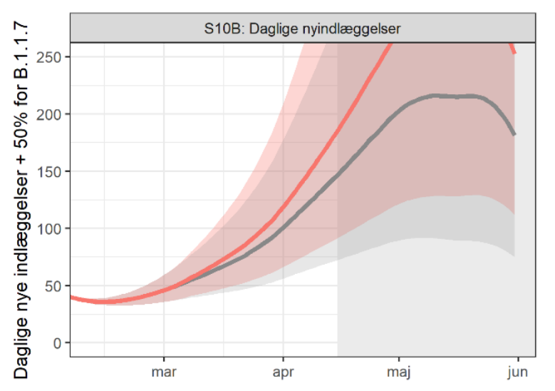
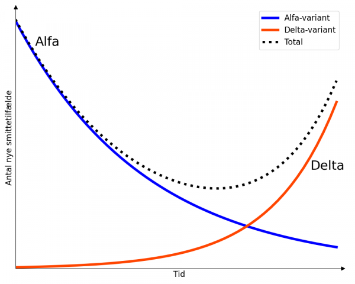
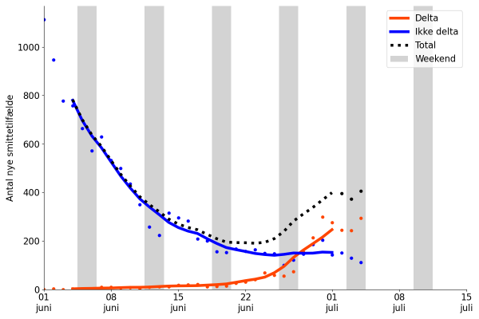
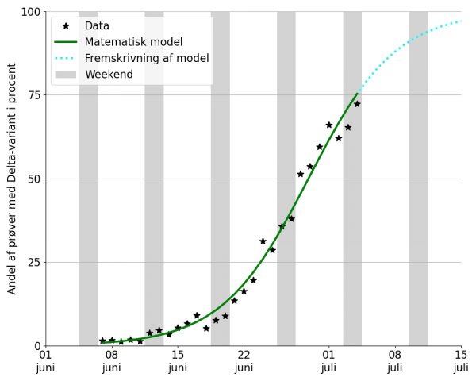

Short talk for DataViz CPH, September 23rd 2021
by Rasmus Kristoffer Pedersen
Scientific Assistant, Mathematical Modelling, Roskilde University
Slides available on rasmuspedersen.com/talks/DataViz
Researcher in applied mathematics at Roskilde University.
Ph.D. in mechanism-based mathematical modelling.
Worked with blood cancers, solid-tumor cancers and disease-spread.
Most recently: Part of the PandemiX group, trying to understand COVID-19 together with Lone Simonsen, Viggo Andreasen and colleagues.
Simple ideas → Mathematical expressions and calculations
→ Insight about the world around us
A good mathematical model:
Interpretation by who?
How? Visualizations!
And if possible, interactive visualizations.
(Not only of data, but also the model)
Interactive figures for a general mathematical topic
Two types of visualizations of a classic mathematical model.
An example of good agreement between theory and data.
... no interactivity though.
All figures originally used in danish articles for "Videnskab.dk" and for danish high-school students.
So apologies for danish text in figures.
Mathematical models can make predictions.
However, predictions aren't perfect.

Mathematical models can make predictions.
However, predictions aren't perfect.
But we can describe how trustworthy it is.
However, "mathematical uncertainty" is difficult to explain.
Article goal: Demonstrate this in a "simple" case.
A "classic" within mathematical modelling.
Describes progression of an epidemic in a population.
Works well for un-mitigated epidemics.
Often described in terms of the "reproduction-number, R0"
(Danish: Kontakttallet)
"Infectious period"
... and here also an additional parameter: The effect of lockdown.
Interactive graphs are not always the best choice.
Instead, implementing the same ideas in a visual way can be better.
Representing a person in a crowd by a circle, with color showing their status:
Can become infected.
Currently infectious and able to transmit disease to the susceptible.
Immune to infections. (Post-infection or due to vaccination)
Conclusion →
Bonus slides ↓
Summer 2021 in Denmark.
Total COVID-19 cases dropping.
But Delta-variant cases increasing.
Well-explained by the SIR-model.
... or more accurately, by exponential growth and decay.
Assuming no major changes in restrictions: Easy to predict future.



Mathematical result: Slope at 50% determines advantage of delta-variant.
Result agreed with observations from UK.
Mathematical modelling is based on simple ideas, but the results can be difficult to grasp.
Good communication and visualization is a necessity.
Visulization tools like Bokeh, d3.js or Chart.js are very useful!
... but a data-plot is not always the best solution, even if it's interactive.
Focus on what is important to communicate,
not just what is easy to show.
Email: rasmuspedersen1992@gmail.com
For more examples of interactive visualizations: Go to my website, or my articles on Videnskab.dk: